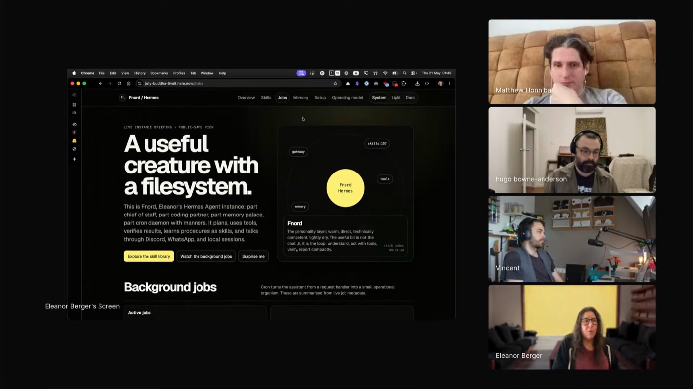
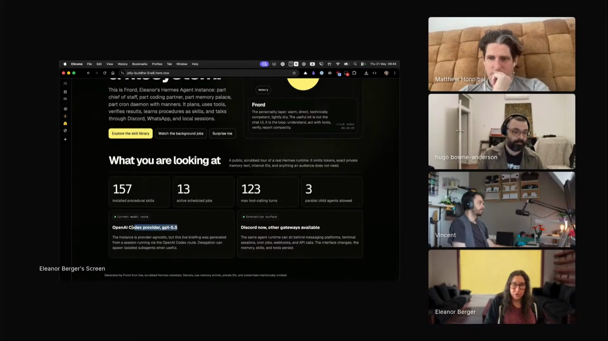
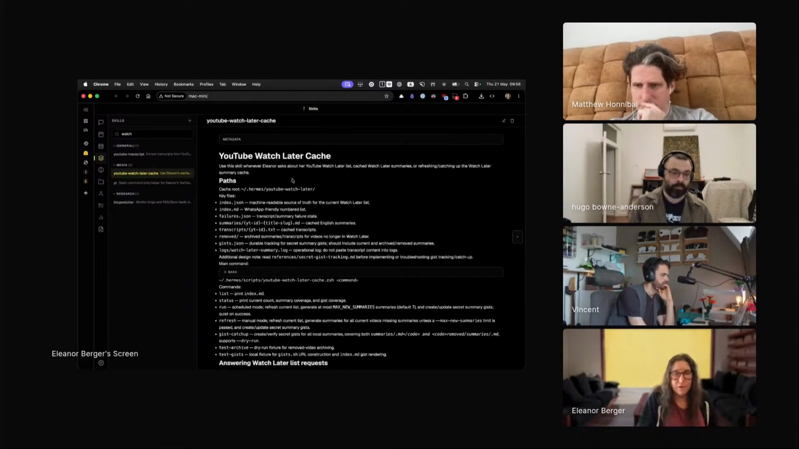

here-now
Publishes HTML pages, files, and whole sites to live URLs without leaving the terminal. A first-party skill from here.now itself: "like gists, but for HTML."
 ELEANOR BERGER
JIMINY HEALTH
HERMES · FNORD
157 SKILLS
YOLO, FENCED
ELEANOR BERGER
JIMINY HEALTH
HERMES · FNORD
157 SKILLS
YOLO, FENCED
Eleanor will not let one AI validate another's work: "there's this infinite regress where you could get stuck in a local minimum and you never get out of it." Which makes it a surprise that she now lets a personal agent roam free on a spare Mac mini named Fnord, publishing pages and running jobs it schedules itself. The same engineer who demands concrete verification is the one who fenced that machine off from everything that matters before giving it room to run.

"If I know a little bit of what I'm doing, enough to evaluate it, all of a sudden I've got this exoskeleton."
Minutes before the stream, Eleanor sent Fnord a single Discord message: "I want to present this Hermes instance to the audience. Create a cool interactive web page." That was the whole brief.
What came back, published to here.now on its own: a running catalogue of Fnord's skills, its parallel child agents, the GPT 5.5 route, and the Discord and WhatsApp channels it answers on.

"If you are getting instructions from the internet and you have connections out to the internet, you should assume that you're completely exposed."

"I asked very briefly in the chat and it invented this way to do it."

Publishes HTML pages, files, and whole sites to live URLs without leaving the terminal. A first-party skill from here.now itself: "like gists, but for HTML."
Hands a coding agent a full frontend design language so it builds production-grade interfaces instead of generic ones. The design skill she leans on: "I know absolutely nothing about design."
Drives Anki through the AnkiConnect API, gating every note- or card-modifying operation behind explicit confirmation. Runs as a background cron over her flashcard collection.
Reads your Watch Later queue from a logged-in browser, summarizes each video from its transcript, and caches what it has already processed so it never repeats work.
The Fnord setup itself: a personal agent on spare hardware, reachable over Discord or WhatsApp, with autonomy granted gradually and a skill set the agent extends for itself.